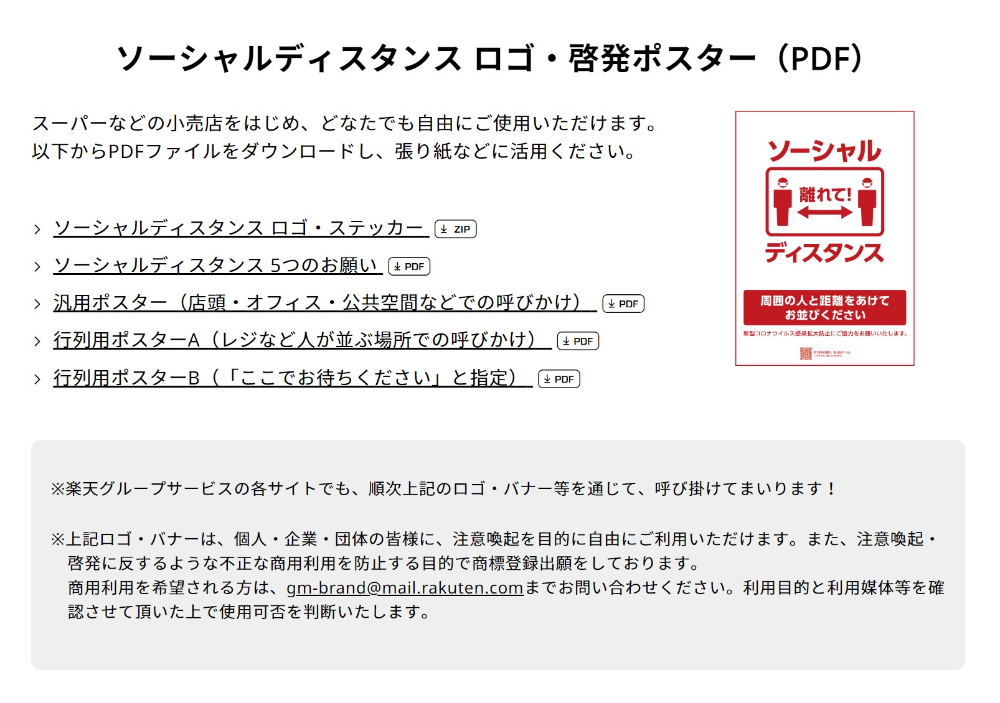

- ヘッダー画像（PAKUTASO）
- Twitter埋め込み（Twitter Publish, Twitterサービス利用規約）
- jQuery参考（WEBDESIGNDAY「ヘッダー・ナビゲーションを固定表示させるアイデア5つ」）
- Home画面、メッセージボックス参考（【CSS】おしゃれなボックスデザイン（囲み枠）のサンプル30, 23番,30番）
- ソーシャルディスタンスとは（goo辞書、 ITmedia NEWS[2020.04.06更新, 鈴木聖子, ITmedia]）
- Home画面、紹介企業様(敬称略)
- Homeスライダー内、ソーシャルディスタンス画像③④⑤（ソーシャルディスタンスステッカーデータ無料配布 )
- Homeスライダー内、ソーシャルディスタンス画像①②（楽天株式会社コーポレートサイト) 